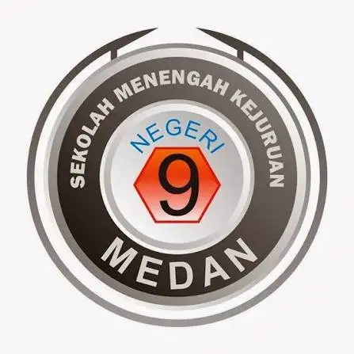
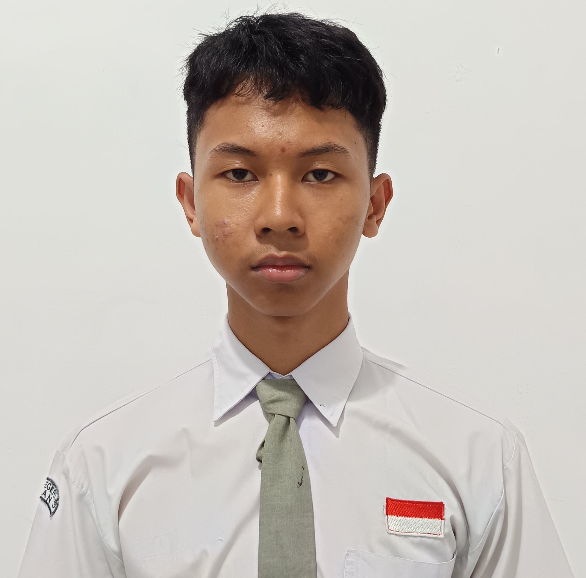
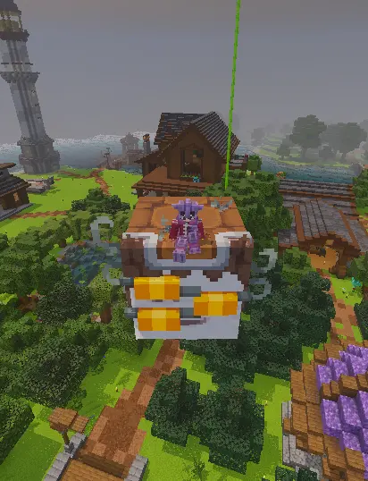

SMK Negeri 9 Medan
Teknik Komputer dan Jaringan
2023 - 2026

I graduated from SMK Negeri 9 Medan, majoring in Computer and Network Engineering. Currently, I am a freshman at Universitas Negeri Medan, eager to learn and deepen my skills in network engineering.

Simulasi dan perancangan jaringan menggunakan Cisco Packet Tracer.
Konfigurasi jaringan dasar pada sistem operasi Linux.
Pemasangan dan penataan perangkat CCTV untuk kebutuhan keamanan.
Teknik Komputer dan Jaringan
2023 - 2026

Saya hanya suka bagian sesi latihan dan tidak berniat berfokus pada tanding amatir.

Saya suka bermain game petualangan dan aksi.
Hiburan alternatif yang lebih mudah dilakukan